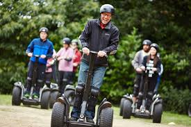

Esta actividad estará disponible para todo el público
si se ha seleccionado la opción al sacar la entrada vía online o en alguna de nuestras taquillas en la entrada. Los segways
se recogen en una caseta a la entrada del parque y se entregan una vez se haya llegado al parque en la misma. Actualmente, se
dispone de 30 de estos aparatos operativos. Serán asignados aleatoriamente al llegar y se podrá cambiar si no queda a gusto.
El recorrido de la actividad será alrededor del parque,
por la Casa de Campo y la duración será de una hora y media, habiendo una pausa de media hora para comer y beber, y para
fotografiar el entorno. El recorrido de la actividad finalizará a la entrada de el parque.